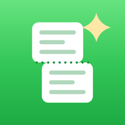

AI长截图 在你的 iPhone 上识别多张截图的重叠部分，自动拼成一张长截图；也可以把录屏、网页或任意照片拼接成长图，并添加水印、边框、设备套壳、打码和标注后导出为图片、PDF 或切片。
拼接处出现感叹号？ 相邻两张截图需要有足够的重叠内容（约四分之一屏）。可在“裁剪”中拖动接缝两侧的手柄手动对齐，或改用“竖向拼接 / 横向拼接”。
怎样截取整个网页？ 在 Safari 中点“分享”，选择“AI长截图·网页快照”。若列表中没有，在分享列表底部点“编辑操作…”添加。
录屏怎样变成长图？ 在“设置 → 滚动截图”中开始录制，滚动页面后停止，App 会把录屏拼成长图。
为什么需要相册权限？ 用于读取你选择的截图并保存拼接结果。原图不会被修改；只有在你确认后才会删除原图。
收费吗？ 目前全部功能免费，无内购、无广告、无需登录。
反馈问题或建议：sellappleapps@gmail.com，我们会在 2 个工作日内回复。
AILongScreenshot finds where your screenshots overlap and joins them into one long image, right on your iPhone. You can also turn screen recordings, web pages or any photos into a tall image, add watermarks, borders, device frames, redaction and markup, and export as an image, PDF or slices.
A seam shows an exclamation mark? Neighboring screenshots need enough overlap (about a quarter of the screen). In Crop, drag the handles beside the seam to line it up, or use Stitch Vertically / Horizontally.
How do I capture a whole web page? In Safari tap Share and choose “AILongScreenshot Web Capture”. If it is missing, tap “Edit Actions…” at the bottom of the share sheet to add it.
How do I turn a screen recording into an image? Start a recording from Settings → Scroll Capture, scroll the page, then stop; the app stitches the recording.
Why does it need photo access? To read the screenshots you choose and save the result. Originals are never changed, and are deleted only when you confirm.
Is it free? All features are currently free, with no purchases, ads or account.
Questions or feedback: sellappleapps@gmail.com. We reply within 2 business days.
生效日期：2026 年 11 月 14 日
AI长截图 不收集、不存储、不出售任何个人数据。没有账号、没有广告、没有第三方统计或追踪 SDK。
本政策如有变更，将在此页面更新。联系：sellappleapps@gmail.com
Effective: November 14, 2026
AILongScreenshot does not collect, store or sell any personal data. There is no account, no advertising and no third-party analytics or tracking SDK.
Changes to this policy will be posted on this page. Contact: sellappleapps@gmail.com
© 2026 Guangzhou Biaojiefu Network Technology Co., Ltd.